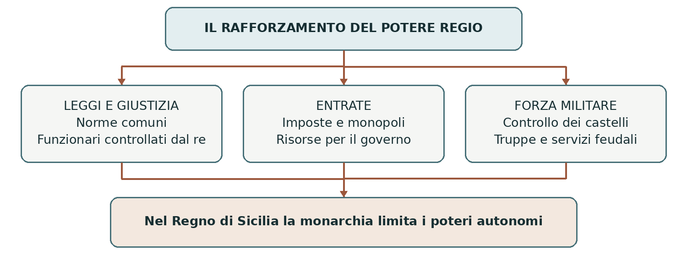
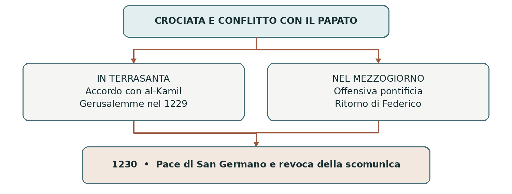
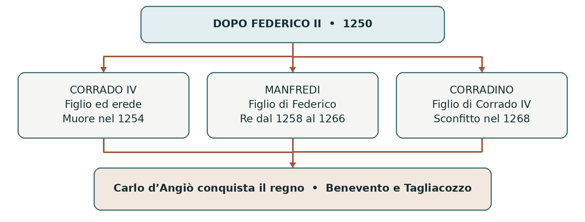
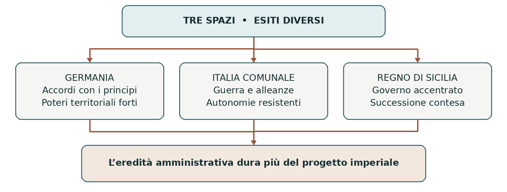
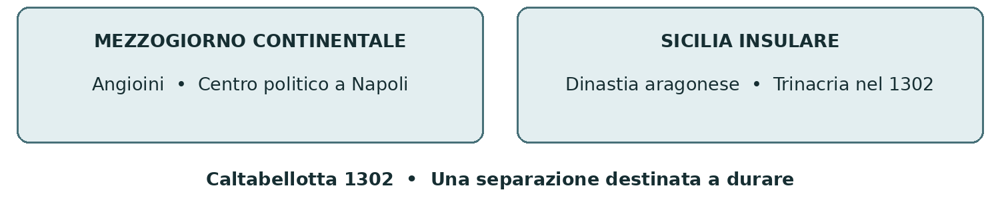

02 IMPERO E REGNI NEL XIII SECOLO
Federico II di Svevia
Il governo del regno e il conflitto con comuni e papato
Federico II ereditò il Regno di Sicilia e la tradizione imperiale degli Svevi. Cercò di rafforzare la propria autorità attraverso leggi, funzionari, diplomazia e guerra. Il suo progetto incontrò però poteri capaci di resistergli. Dopo la sua morte, la contesa per il Mezzogiorno coinvolse nuove dinastie e portò alla separazione politica della Sicilia dalla parte continentale del regno.
0 Domanda generatrice
Perché Federico II riuscì a rafforzare la monarchia nel Mezzogiorno, ma non a imporre un controllo stabile sull’intera Italia? Per rispondere occorre distinguere i territori che governava, le risorse a sua disposizione e gli interessi dei suoi avversari.
In sintesi Federico non governava uno spazio uniforme: le stesse pretese di autorità incontravano condizioni diverse in Sicilia, in Germania e nelle città italiane.
1 Il mondo precedente
Il matrimonio fra Enrico VI e Costanza d’Altavilla aveva collegato la casa di Svevia alla dinastia normanna. Il loro figlio Federico, nato a Jesi nel 1194, era nipote di Barbarossa per parte paterna e di Ruggero II per parte materna. Nel 1198 fu incoronato re di Sicilia. Il nome del regno comprendeva sia l’isola sia il Mezzogiorno continentale.
Enrico VI morì nel 1197; Costanza nel 1198, dopo aver affidato al papa Innocenzo III la tutela del figlio. La minorità del re favorì le iniziative di signori e capi militari. La monarchia conservava però un’importante eredità normanna di uffici, entrate e poteri regi, sulla quale Federico avrebbe potuto costruire la propria azione.
Innocenzo III rafforzò l’autorità pontificia a Roma e nell’Italia centrale, cercando di sottrarre territori e comunità all’influenza imperiale. Rivendicava inoltre la signoria feudale della Chiesa sul Regno di Sicilia. Per il papa, un sovrano potente sia a nord sia a sud dei domini pontifici costituiva una minaccia politica.
In sintesi L’eredità di Federico gli offriva risorse e prestigio, ma alimentava il timore del papato. La lotta per la corona tedesca rese questo contrasto ancora più evidente.
2 Le fratture
Da Ottone IV alla candidatura di Federico
Dopo la morte di Enrico VI, la successione nel regno tedesco rimase contesa. Innocenzo III sostenne Ottone di Brunswick, incoronato imperatore come Ottone IV nel 1209. Quando Ottone cercò di estendere il proprio potere al Mezzogiorno, il papa lo scomunicò e appoggiò il giovane Federico contro di lui.
Una parte dei principi tedeschi scelse Federico nel 1211; egli raggiunse la Germania nel 1212, dove la sua elezione fu confermata. La sconfitta di Ottone a Bouvines nel 1214, ad opera del re di Francia Filippo II Augusto, consolidò la posizione di Federico. Il viaggio in Germania precedette dunque Bouvines: non ne fu una conseguenza.
Nel 1220 papa Onorio III incoronò Federico imperatore a Roma. Nei rapporti con il papato il sovrano aveva assunto impegni sulla crociata e sulla separazione fra Regno di Sicilia e Impero. Le due realtà rimasero giuridicamente distinte, ma la loro concentrazione nella stessa persona non eliminava il timore di accerchiamento del papa.
In sintesi Il papato favorì Federico per fermare Ottone, ma la potenza del nuovo imperatore ripropose il problema che voleva evitare.
3 Attori, gruppi e conflitti
Soggetto | Interesse principale | Risorse e limiti |
|---|---|---|
Federico II | Rendere effettiva l’autorità regia e imperiale. | Dispone del regno meridionale; deve negoziare altrove. |
Baroni e città del Regno | Difendere patrimoni, privilegi e spazi di decisione. | Possono collaborare con il re oppure resistergli. |
Principi tedeschi | Consolidare i propri poteri territoriali. | Il loro sostegno è necessario alla monarchia. |
Comuni italiani | Difendere autonomia e influenza sulle città vicine. | Sono divisi; alcuni sostengono l’imperatore. |
Papato | Tutelare autorità ecclesiastica e domini territoriali. | Usa diplomazia, alleanze, scomuniche ed eserciti. |
In sintesi Nessuno schieramento era immobile. Le scelte dipendevano da interessi locali, fedeltà dinastiche e rapporti di forza.
4 Il processo storico
Riorganizzare il Regno di Sicilia
Tornato nel Mezzogiorno nel 1220, Federico avviò il recupero dei diritti della corona. Controllò concessioni e privilegi, contrastò le usurpazioni e impose maggiore disciplina a baroni e città. L’obiettivo era rendere il governo meno dipendente dalle decisioni dei poteri locali, continuando e rafforzando istituzioni già presenti sotto i Normanni.
Nel 1231 promulgò le Costituzioni di Melfi, raccolte nel Liber Augustalis. Non erano una costituzione nel significato contemporaneo: erano un corpo di leggi del Regno di Sicilia. Riordinavano norme precedenti e nuove disposizioni, affermando la superiorità della legislazione regia rispetto alle consuetudini incompatibili con essa.
Nell’amministrazione della giustizia ebbero un ruolo centrale i giustizieri, funzionari che rappresentavano l’autorità regia nelle province. Il sovrano ampliò il controllo sui tribunali e sulla forza militare dei signori. Tuttavia la feudalità non scomparve: molti nobili continuarono a servire la monarchia e a fornire uomini e competenze.
Le risorse necessarie a governare
Leggi e uffici richiedevano denaro. Il sistema fiscale divenne più regolare e la corona controllò attività e risorse produttive, anche mediante monopoli, per esempio sul sale. La pressione delle imposte finanziava funzionari, castelli e campagne militari, ma poteva alimentare il malcontento. Queste misure appartengono a una politica sviluppata nel tempo: non furono tutte create da un solo provvedimento nel 1231.
Federico impiegò truppe direttamente legate alla corona e contingenti stipendiati, senza eliminare ogni servizio feudale. La maggiore capacità di organizzazione del regno va quindi distinta dall’esistenza di un esercito nazionale moderno.
In sintesi La monarchia rafforzò leggi, giustizia e finanze. Fu un importante processo di accentramento medievale, non la nascita improvvisa dello Stato moderno.

La crociata e la prima scomunica
Un impegno religioso con conseguenze politiche
Federico aveva assunto l’impegno di guidare una crociata già prima dell’elezione di Gregorio IX. Le partenze furono rinviate e i rapporti con il papato si irrigidirono. Nel 1227 il sovrano si imbarcò, ma un’epidemia e la sua malattia interruppero il viaggio. Gregorio IX non accettò la giustificazione e lo scomunicò, ritenendo violati gli impegni presi.
La scomunica escludeva dalla comunione della Chiesa. Nel caso di un sovrano poteva anche indebolirne il prestigio e incoraggiare gli avversari. La controversia univa quindi motivi religiosi, obblighi non rispettati e conflitti politici. Ridurla al solo desiderio del papa di allontanare Federico dall’Italia non ne spiega la complessità.
Gerusalemme ottenuta con un accordo
Federico partì nuovamente nel 1228, ancora scomunicato, per la spedizione nota come sesta crociata. Nel 1229 concluse un accordo con al-Kamil, sultano d’Egitto della dinastia ayyubide. Il suo interlocutore non era un sovrano turco. La trattativa consentì ai cristiani di riottenere Gerusalemme e altri luoghi, mentre l’area dei principali santuari islamici della città rimaneva affidata ai musulmani.
L’intesa prevedeva una tregua limitata nel tempo. Fu favorita anche dagli interessi e dalle rivalità politiche del mondo ayyubide. Federico conseguì dunque un risultato diplomatico importante, ma non una pace generale e definitiva fra cristiani e musulmani.
Il ritorno e la pace del 1230
Durante la sua assenza, un esercito pontificio penetrò nel Regno di Sicilia. Tornato nel 1229, Federico recuperò il controllo dei territori invasi. Alla ripresa militare seguì il negoziato: la pace di San Germano del 1230 preparò la riconciliazione e la revoca della scomunica. Entrambe le parti accettarono impegni; nessuna aveva risolto definitivamente le ragioni del contrasto.
In sintesi Il successo in Terrasanta non cancellò il conflitto italiano. Diplomazia e guerra riportarono a un accordo temporaneo con il papa.

Il conflitto con i comuni e il papato
La Lega e la vittoria di Cortenuova
Federico cercava anche di rendere effettiva l’autorità imperiale nell’Italia centrosettentrionale. I comuni difendevano spazi di autonomia consolidati, anche grazie alla pace di Costanza del 1183. Nel 1226 numerose città rinnovarono la Lega lombarda per opporsi alla pressione imperiale.
Le città non agirono tutte contro Federico. Le rivalità fra comunità e fra gruppi interni alimentarono gli schieramenti guelfo e ghibellino: i primi si collegavano generalmente al papa, i secondi all’imperatore. Queste denominazioni non descrivono partiti moderni né spiegano da sole ogni conflitto locale.
Nel 1237, a Cortenuova, Federico sconfisse le forze della Lega. La vittoria, ottenuta anche con alleati italiani, sembrò aprire la strada alla sottomissione delle città avversarie. Tuttavia le richieste imperiali di resa impedirono un accordo condiviso; Milano proseguì la resistenza e nel 1238 l’assedio di Brescia fallì. Come per Barbarossa, vincere una battaglia non equivaleva a controllare stabilmente il territorio.
Dalla scomunica alla deposizione dichiarata
Nel 1239 Gregorio IX scomunicò nuovamente Federico. Il conflitto riguardava il governo delle città, i diritti della Chiesa nel Regno e l’estensione del potere imperiale in Italia. Dopo la morte di Gregorio e il brevissimo pontificato di Celestino IV, fu eletto Innocenzo IV, che proseguì lo scontro.
Al concilio di Lione del 1245 Innocenzo IV dichiarò Federico deposto e sciolse i sudditi dall’obbligo di fedeltà. Federico rifiutò la decisione e continuò a governare e combattere. Il papa rivendicava il diritto di giudicare il sovrano; l’imperatore ne contestava l’applicazione alla propria autorità. La dichiarazione di deposizione non produsse una destituzione effettiva e immediata.
Gli ultimi anni
Nel 1248 Federico subì una grave sconfitta presso Parma. Nel 1249, a Fossalta, i Bolognesi catturarono suo figlio Enzo. Erano colpi duri, ma l’imperatore manteneva sostenitori anche fuori dal Mezzogiorno: non fu abbandonato in blocco dall’Italia e dalla Germania.
Federico morì il 13 dicembre 1250 a Castel Fiorentino, in Capitanata, mentre il conflitto era ancora aperto. La sua morte aprì una crisi dinastica; non coincise con la scomparsa immediata del partito imperiale.
In sintesi La forza del Regno di Sicilia sostenne il progetto imperiale, ma non bastò a superare la resistenza dei comuni e l’opposizione pontificia.
5 Le fonti in dialogo
Leggi e formazione al servizio del sovrano
Fonte A • Proemio delle Costituzioni di Melfi, 1231. Il testo è promulgato in nome di Federico e si rivolge a funzionari e sudditi del Regno. Stabilisce la priorità delle leggi regie e giustifica l’autorità del sovrano anche attraverso la provvidenza divina. Nella traduzione pubblicata da Reti Medievali si legge:
«solo le presenti disposizioni emanate in nostro nome abbiano vigore nel nostro regno di Sicilia».
Fonte B • Lettera di fondazione dello Studio di Napoli, 1224. Con una comunicazione ai sudditi, Federico annuncia l’istituzione dello Studio, cioè dell’università. In sintesi, la lettera invita a studiare nel regno e collega la formazione alle competenze necessarie alla sua amministrazione. È qui presentato un riassunto del documento, non una citazione.
Interpretazione. Le due fonti permettono di collegare le norme agli uomini chiamati ad applicarle. La monarchia aveva bisogno di persone capaci di leggere, scrivere e conoscere il diritto. I documenti mostrano ciò che il potere intende realizzare; per misurarne l’efficacia servono anche registri, sentenze e testimonianze sulla pratica di governo.
Domande sulle fonti. A quale territorio si applica la fonte A? Perché un sovrano vuole formare giuristi? Qual è la differenza fra affermare l’obbedienza a una legge e dimostrare che essa venga rispettata?
La cultura della corte e i suoi limiti
La corte federiciana favorì lo studio, le traduzioni e gli scambi fra tradizioni culturali diverse. In questo ambiente si sviluppò la Scuola siciliana, importante per la poesia in volgare. L’interesse di Federico per la natura emerge anche nel suo trattato sulla caccia con gli uccelli, basato su osservazioni ed esperienza.
Questa apertura non coincideva con la libertà religiosa nel senso attuale. Le leggi reprimevano l’eresia. Dopo le rivolte nella Sicilia musulmana, Federico trasferì forzatamente gruppi di abitanti a Lucera, dove una comunità musulmana visse sotto il controllo regio e fornì anche soldati. Protezione, interesse politico e coercizione potevano convivere.
Leggere il territorio
Foggia, Lucera e Castel Fiorentino inseriscono la Capitanata nella storia europea del Duecento: residenze e spostamenti della corte, gestione delle risorse agricole e controllo militare ne fecero un’area importante del governo federiciano. La corte era itinerante; non bisogna immaginare tutte le attività concentrate stabilmente in una sola capitale.
In sintesi Il potere regio si serviva di leggi e cultura, ma restava una monarchia medievale, fondata su gerarchie sociali e su una concezione religiosa dell’autorità.
6 Conseguenze e nuovo assetto
La successione sveva dopo il 1250
Alla morte di Federico, il progetto di un forte potere svevo non scomparve subito. Il figlio Corrado IV, suo erede, cercò di consolidare la posizione dinastica, ma morì nel 1254. Suo figlio Corradino era ancora bambino. Nel Mezzogiorno agì Manfredi, un altro figlio di Federico, che nel 1258 assunse il titolo di re di Sicilia.
La presenza sveva continuò a preoccupare il papato. Per contrastarla, i pontefici cercarono un sovrano capace di conquistare il regno: la scelta cadde su Carlo d’Angiò, fratello di Luigi IX di Francia. L’accordo fu avviato sotto Urbano IV e portato a compimento sotto Clemente IV. Nel 1266 Carlo fu incoronato a Roma da cardinali incaricati dal pontefice.
Nello stesso anno Carlo sconfisse Manfredi a Benevento; Manfredi morì in battaglia. Nel 1268 anche il tentativo di Corradino fallì con la sconfitta di Tagliacozzo. Catturato, Corradino fu fatto giustiziare a Napoli. Questi due passaggi, distinti dalla morte di Federico, posero fine al governo svevo del Mezzogiorno.

Germania e Italia dopo gli Svevi
In Germania si rafforzarono i poteri territoriali dei principi. Il processo aveva radici precedenti e fu favorito anche dalle concessioni con cui Federico si era assicurato sostegno: non dipese soltanto dalla sua assenza. La crisi della monarchia proseguì dopo il 1250 e il 1254, fino all’elezione di Rodolfo d’Asburgo nel 1273.
Nelle città italiane proseguirono rivalità e lotte di fazione, già presenti durante il regno di Federico. Il papato aveva eliminato la dinastia sveva dal Mezzogiorno, ma dovette ora fare i conti con la potenza del proprio alleato angioino.
In sintesi La successione trasformò gli equilibri italiani. Le istituzioni del regno sopravvissero a lungo ai sovrani, mentre mutavano la dinastia e le alleanze.
Carlo d’Angiò e i Vespri siciliani
Una nuova potenza nel Mediterraneo
Carlo consolidò il governo angioino e divenne un punto di riferimento dello schieramento guelfo. Ottenne anche la carica di senatore di Roma. Napoli assunse il ruolo di principale centro politico e amministrativo del regno, mentre Palermo perse centralità. L’apparato fiscale ereditato dagli Svevi fu utilizzato per sostenere guerre e progetti dinastici.
Le ambizioni di Carlo oltrepassavano il Mezzogiorno: mirava a estendere la propria influenza in Italia e nel Mediterraneo orientale, soprattutto a danno dell’Impero bizantino. Parlare di Impero ottomano in questa fase sarebbe un anacronismo. Carlo partecipò anche alla spedizione contro Tunisi del 1270, guidata da Luigi IX: nella numerazione tradizionale è l’ottava crociata, durante la quale il re francese morì.
Il papato non mantenne una posizione unica verso Carlo. Alcuni pontefici lo favorirono; altri cercarono di limitarne la potenza. Gregorio X sostenne un riequilibrio politico che comprendeva il riconoscimento di Rodolfo d’Asburgo. Rodolfo fu eletto re dei Romani dai principi tedeschi nel 1273: non ricevette dal papa una corona imperiale e non fu mai incoronato imperatore.
La rivolta del 1282
In Sicilia la pressione fiscale, gli abusi dei funzionari e l’ostilità verso il dominio angioino alimentarono una profonda tensione. Nel 1282, a Palermo, scoppiò la rivolta dei Vespri siciliani, che si estese nell’isola. La perdita di centralità politica contribuì al malcontento, ma non fu l’unica causa della ribellione.
I ribelli trovarono sostegno in Pietro III d’Aragona, sposato con Costanza, figlia di Manfredi. Il legame dinastico forniva agli Aragonesi una rivendicazione sulla Sicilia, mentre gli interessi mediterranei rendevano conveniente l’intervento. La rivolta divenne così una guerra internazionale contro gli Angioini.
Caltabellotta e la separazione del regno
La pace di Caltabellotta del 1302 riconobbe a Federico d’Aragona, detto II o III secondo la numerazione adottata, il governo dell’isola con il titolo di re di Trinacria. Era figlio di Pietro III e pronipote dello Svevo: non va confuso con Federico II imperatore.
L’accordo prevedeva il ritorno dell’isola agli Angioini dopo la sua morte, ma questa clausola non fu attuata. La Sicilia rimase alla dinastia aragonese locale e la parte continentale agli Angioini. Il trattato chiuse una fase della guerra, non ogni contrasto successivo fra le dinastie.
In sintesi Il tentativo angioino di costruire una grande potenza produsse nuove resistenze. Dalla crisi nacque una separazione politica duratura nel Mezzogiorno.
7 Conclusione
Un governo forte non significa un potere illimitato
Federico poteva rafforzare il governo nel Regno di Sicilia perché disponeva di un’eredità monarchica e amministrativa sulla quale intervenire. In Germania doveva invece accordarsi con principi potenti; nell’Italia comunale incontrava città abituate a governarsi. Il papato, pur avendone favorito l’ascesa, si oppose a un assetto che ne minacciava l’autonomia.
La differenza fra questi territori spiega perché le riforme meridionali non si tradussero nel controllo di tutta l’Italia. Le vittorie militari non cancellarono le istituzioni e gli interessi degli avversari. La morte di Federico e le lotte dei suoi eredi interruppero il progetto dinastico, mentre parti importanti dell’organizzazione del regno furono riprese dai successori.

Dal progetto svevo alla divisione del Mezzogiorno
Il tramonto degli Svevi favorì gli Angioini, ma neppure il nuovo dominio fu incontrastato. La rivolta siciliana, l’intervento aragonese e le trattative trasformarono l’unità del regno meridionale.

Sintesi finale Federico rafforzò la monarchia nel Mezzogiorno attraverso leggi e funzionari. In Germania e nell’Italia comunale incontrò rapporti di forza diversi. Il conflitto con il papa aggravò lo scontro, senza provocare una caduta immediata. Dopo il 1250 la successione rimase contesa. Le vittorie angioine del 1266 e del 1268 chiusero il governo svevo. I Vespri del 1282 e Caltabellotta nel 1302 aprirono una nuova geografia politica del Sud.
Orientarsi nel tempo e nello spazio
Il periodo. 1194-1250 per la vita di Federico; 1220-1250 per il suo regno imperiale. Gli sviluppi successivi arrivano al 1302. Gli spazi. Germania, Italia comunale, territori pontifici, Mezzogiorno continentale, Sicilia e Mediterraneo orientale. La distinzione tra Impero e Regno di Sicilia resta essenziale anche quando il sovrano è lo stesso.
Linea del tempo ragionata
Data | Evento | Significato |
|---|---|---|
1194-1198 | Nascita e corona di Sicilia | Le eredità sveva e normanna si incontrano. |
1211-1212 | Candidatura e viaggio in Germania | Federico contende a Ottone IV il potere regio. |
1214 | Bouvines | La sconfitta di Ottone rafforza Federico. |
1220 | Incoronazione imperiale | Inizia una nuova fase nei rapporti col papato. |
1224 | Studio di Napoli | La formazione sostiene il governo del regno. |
1226-1227 | Lega rinnovata e scomunica | Si rafforzano le opposizioni comunale e pontificia. |
1228-1230 | Crociata e pace di San Germano | Diplomazia in Oriente e riconciliazione temporanea. |
1231 | Costituzioni di Melfi | Riordino delle leggi del Regno di Sicilia. |
1237-1239 | Cortenuova e nuova scomunica | La vittoria non chiude il conflitto. |
1245 | Concilio di Lione | Il papa dichiara Federico deposto; egli resiste. |
1248-1250 | Parma, Fossalta, morte di Federico | Difficoltà militari e apertura della successione. |
1254-1258 | Morte di Corrado IV; Manfredi re | La dinastia sveva continua a lottare. |
1266-1268 | Benevento e Tagliacozzo | Carlo d’Angiò sconfigge Manfredi e Corradino. |
1270-1273 | Tunisi; elezione di Rodolfo | Progetti mediterranei e nuovi equilibri europei. |
1282 | Vespri siciliani | La rivolta apre la via all’intervento aragonese. |
1302 | Pace di Caltabellotta | Sicilia e parte continentale restano separate. |
Da non confondere. San Germano: accordo del 1230 fra Federico e il papa. Melfi: legislazione regia del 1231. Caltabellotta: trattato del 1302, più di mezzo secolo dopo la morte dell’imperatore.
Le parole per comprendere il capitolo
Parola | Significato nel contesto |
|---|---|
Regno di Sicilia | Monarchia nata con i Normanni: prima dei Vespri comprende l’isola e il Mezzogiorno continentale. |
Accentramento | Rafforzamento delle decisioni e dei controlli esercitati dal governo centrale. |
Burocrazia | Insieme di uffici e funzionari che svolgono compiti amministrativi. |
Giustiziere | Funzionario regio con competenze giudiziarie e di governo nel territorio assegnato. |
Costituzioni | In questo caso leggi emanate dal sovrano; non una carta costituzionale democratica. |
Monopolio regio | Controllo esclusivo riservato alla corona su determinate attività o risorse economiche. |
Scomunica | Esclusione dalla comunione ecclesiale; può avere anche conseguenze politiche. |
Deposizione | Dichiarazione di rimozione da una carica; va distinta dalla perdita effettiva del potere. |
Crociata | Spedizione promossa o riconosciuta dalla Chiesa con finalità religiose e privilegi per i partecipanti. |
Guelfi e ghibellini | Schieramenti generalmente collegati a papa e imperatore, intrecciati a rivalità locali. |
Interregno | Periodo di crisi della successione e di debolezza dell’autorità regia, anche con sovrani rivali. |
Dinastia | Successione di sovrani appartenenti alla stessa famiglia. |
Vespri siciliani | Rivolta del 1282 contro il dominio angioino in Sicilia e avvio della guerra successiva. |
Trinacria | Nome della Sicilia insulare usato nel titolo regio riconosciuto dall’accordo del 1302. |
Comprendere i rapporti di causa ed effetto
1. Perché Innocenzo III appoggiò prima Ottone IV e poi Federico?
2. Come si collegano leggi, formazione dei funzionari ed entrate fiscali?
3. Perché Cortenuova non risolse il conflitto con i comuni?
4. Perché la dichiarazione di deposizione non equivalse alla fine del governo?
5. Quali cause locali e quali interessi internazionali agirono nei Vespri?
Saperi irrinunciabili e verifica
Dodici cose da saper spiegare
1. Federico ereditò il regno normanno e la tradizione imperiale degli Svevi.
2. Il papa temeva la concentrazione del potere a nord e a sud dei propri territori.
3. L’ascesa in Germania precedette la sconfitta di Ottone a Bouvines.
4. Nel 1220 Federico divenne imperatore conservando la corona di Sicilia.
5. Le Costituzioni di Melfi rafforzarono un apparato regio già esistente.
6. La monarchia accentrata di Federico conservava caratteri medievali.
7. La crociata del 1228-1229 ottenne Gerusalemme mediante un accordo.
8. Comuni e principi non formarono un unico fronte contro l’imperatore.
9. Scomuniche e deposizione dichiarata indebolirono Federico senza destituirlo subito.
10. La fine del governo svevo seguì le sconfitte di Manfredi e Corradino.
11. La potenza angioina suscitò resistenze anche fra precedenti alleati.
12. I Vespri e Caltabellotta portarono alla separazione politica del Mezzogiorno.
Correggere e argomentare
Correggi tre affermazioni. «Federico fondò uno Stato moderno privo di feudatari»; «Carlo d’Angiò combatté contro gli Ottomani»; «Il papa nominò Rodolfo imperatore nel 1273». Per ogni frase indica sia l’errore sia la formulazione corretta.
Scrivi 15-20 righe. Rispondi alla domanda generatrice distinguendo Regno di Sicilia, Germania e comuni italiani. Usa almeno tre eventi datati e chiarisci il ruolo del papato. Concludi indicando un elemento di continuità e uno di rottura dopo il 1250.
Fonti per approfondire
Materiale di partenza: Federico_II_schemi.pdf di gbprof. Controllo storico: Treccani, Federiciana, voci su Federico II, Liber constitutionum, Crociata, pace di San Germano, Lucera e Capitanata; Dizionario Biografico, voci su Carlo I e Carlo II d’Angiò; voci su Rodolfo I e Federico d’Aragona.
Fonti della pagina 6: Reti Medievali, Antologia delle fonti bassomedievali, XIV, 4, «Le costituzioni di Melfi», a cura di S. Gasparri, A. Di Salvo e F. Simoni; Fulvio Delle Donne, 1224 Federico II. La fondazione della più antica università statale della storia, 2022, con testo e traduzione della lettera di fondazione.
Consultazione: treccani.it • www.rm.unina.it/didattica/fonti/anto_bme/cap_XIV/XIV_4.htm • www.fedoabooks.unina.it/index.php/fedoapress/it/catalog/book/550